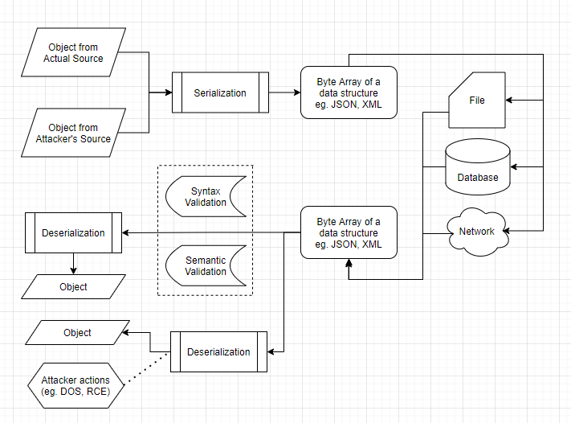

Aenean ornare velit lacus, ac varius enim lorem ullamcorper dolore aliquam.
Insecure software is one of the top ten OWASP Application Security Risks in addition to other risks which have been mentioned by the posts of the peers.
Serialization is the process of turning some object into a specific data format or as a stream of bytes which can be restored later. (eg. saving for storage and sending as part of communications). Deserialization is the reverse process of Serialization, which is rebuilding the object from that data format. The popular data format for data serialization includes JSON, XML, YAML, CSV etc.
For insecure deserialization, it is a vulnerability when the received untrusted data being used to damage, stolen or any violation without sufficient data verification. The main possible reasons for this vulnerability are deserializing data from untrusted sources and without data validation (Khunphet, 2019). With this vulnerability, an attacker may perform denial-of-service (DOS), access control and remote code execution (RCE) through the deserialization process.
In order to prevent the deserialization being repurposed for malicious effect, developers should validate all possible inputs. Input validation ensures only properly and expected formatted data can enter a software system component. The validity of an application can be checked both syntactically and semantically (OWASP, 2017):
Besides, OWASP Application Security Verification Standard (ASVS) can also be referenced when developing secure applications. ASVS provides a basis for testing application technical security controls, which helps against insecure deserialization and other vulnerabilities like Cross-Site Scripting (XSS) and SQL injection (OWASP 2021). There are also some libraries designed for the validation along with the serialization process such as Fastify v3 (Spigolon, 2020), though developers should also be cautious for the credibility of the library itself.
Reference:
Aenean ornare velit lacus, ac varius enim lorem ullamcorper dolore aliquam.

Aenean ornare velit lacus, ac varius enim lorem ullamcorper dolore aliquam.

Aenean ornare velit lacus, ac varius enim lorem ullamcorper dolore aliquam.
Sed varius enim lorem ullamcorper dolore aliquam aenean ornare velit lacus, ac varius enim lorem ullamcorper dolore. Proin sed aliquam facilisis ante interdum. Sed nulla amet lorem feugiat tempus aliquam.